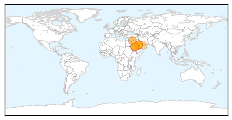

30 Day Trends
Web: 0 alerts, 0 warnings
Twitter: 4 alerts, 0 warnings
Top Articles:
- 0.998
- Riyadh, Jordan each report 2 new MERS cases
- 0.997
- Saudi Arabia sees Mers deaths surge
- 0.996
- Saudi Arabia sees Mers deaths surge
- 0.996
- Saudi Arabia sees Mers deaths surge
- 0.995
- Saudi Arabia Reports Surge in MERS Fatalities
- 0.992
- Deaths from MERS virus surge in Saudi Arabia
- 0.984
- Middle East respiratory syndrome coronavirus: transmission, virology and therapeutic targeting to aid in outbreak control
- 0.981
- KBS World Radio
- 0.981
- Saudi Arabia may ban anyone in contact with MERS patients from performing Hajj - Xinhua
- 0.959
- Jordan reports first coronavirus death in 2015
- 0.941
- Deaths from MERS virus improvement in Saudi Arabia
- 0.889
- Arresting MERS: National Guard health staff barred from Haj
- 0.820
- MERS worry as Hajj dates approach
Top Tweets:
-
No tweets found for Aug 28, 2015
Web/News Articles

Tweets

Article Locations
Article Confidences